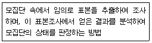
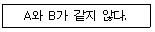
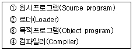
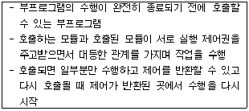
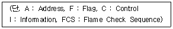

사무자동화산업기사 (2008-03-02 기출문제)
1과목: 사무자동화 시스템
1. 다음 중 신체장애를 유발할 수 있는 사무환경과 관계없는 것은?
- 온도, 소음 등의 작업환경
- 작업 공간
- 사무자동화기기의 작업시간
- 사무자동화기기간의 비호환성
(정답률: 93%)

2. 스프레드시트에서 기존 목록이나 표에 있는 데이터를 요약하고 분석할 수 있는 것은?
- 필터
- 매크로
- 피벗테이블
- VLOOKUP
(정답률: 85%)
3. 고정전화망이나 이동 통신망 등 회로스위치나 소켓스위치가 다른 공중통신서비스를 IP기술이나 인터넷 전화에 쓰이는 프로토콜인 SIP로 통합하여 멀티미디어 서비스를 실현시키는 방식은?
- VoD
- WLAN
- VoIP
- IMS
(정답률: 59%)
4. 다음 중 사무자동화의 기대효과와 거리가 먼 것은?
- 조직의 최적화
- 생산성의 개선
- 부수적 기능(Shadow Function)의 증가
- 적시성(Timing)의 증가
(정답률: 83%)
5. 다음 중 보조기억장치가 아닌 것은?
- USB 메모리
- 자기테이프
- 하드디스크
- 램
(정답률: 79%)
6. 다음 중 컴퓨터의 성능을 높이기 위하여 명령어의 처리속도를 CPU와 같도록 할 목적으로 기억장치와 CPU 사이에 사용하는 것은?
- Virtual memory
- DMA
- Associate memory
- Cache memory
(정답률: 85%)
7. 다음 중 사무자동화의 정성적 효과인 것은?
- 재고, 설비, 금리 등에 대한 직접비, 간접비의 개선
- 수익성 향상을 위한 지원
- 시장(환경)의 변화에 신속히 대처
- 정보의 입수까지 드는 전체 비용의 절감
(정답률: 76%)
8. 다음 중 연산장치의 구성요소가 아닌 것은?
- 가산기
- 감산기
- 누산기
- 레지스터
(정답률: 75%)
9. 다음 중 6매의 디스크로 구성된 디스크 팩의 사용 가능한 기록표면은 몇 면인가?
- 6면
- 8면
- 10면
- 12면
(정답률: 60%)
10. 전자 우편에서 인증, 메시지 무결성, 송신처의 부인방지, 데이터 보안과 같은 암호학적 보안 서비스를 제공할 수 있는 것은?
- 세션키 분배방식
- POP3
- S/MIME
- SMTP
(정답률: 72%)
11. 다음 중 원격회의 시스템의 장점으로 옳지 않은 것은?
- 시간절약
- 개인적 정보접근 가능
- 신속한 의사결정
- 의사소통기능의 강화
(정답률: 65%)
12. 다음 중 사무자동화 수행방식의 종류에 해당하지 않은 것은?
- 전사적 접근방식
- 상향식 접근방식
- 하향식 접근방식
- 계층별 접근방식
(정답률: 74%)
13. 저장매체인 DVD에서 특히 영상 데이터 저장시 적용되는 압축 방식은?
- MPEG1
- JPEG
- MPEG2
- MPEG4
(정답률: 53%)
14. 기업 내의 컴퓨터 애플리케이션들을 현대화하고, 통합하고, 조정하는 것을 목표로 세운 계획, 방법 및 도구 등을 일컫는 것은?
- e-business
- BPR
- EAI
- ERP
(정답률: 41%)
15. 다음 중 사무자동화(OA)의 접근방법의 유형에 속하지 않는 것은?
- 부분 전개 접근방법
- 업무별 접근방법
- 사원별 접근방법
- 계층별 접근방법
(정답률: 68%)
16. 정보통신망 구조 중에서 중앙에 컴퓨터가 있고 그 주위에 분산된 터미널을 연결시키는 형태의 통신망 구조는?
- 성형 통신망
- 트리형 통신망
- 링형 통신망
- 버스형 통신망
(정답률: 83%)
17. 압축 기법 중 멀티미디어 정보에서 의학용 영상 등과 같은 정확성이 요구되는 데이터들의 압축에 주로 사용되는 비트 보존 압축기법이라 하는 것은?
- 손실 압축
- 무손실 압축
- 영상 압축
- 음향 압축
(정답률: 90%)
18. 다음 중 전자화폐의 특징에 해당하지 않은 것은?
- 전자 화폐는 한국은행에서 발행한다.
- 사적인 비밀보장이 갖추어져야 한다.
- 다른 사람에게 이전이 가능해야 한다.
- 전자화폐의 보안성이 물리적인 존재에 의존해서는 안 된다.
(정답률: 84%)
19. 어떤 응용프로그램을 사용하는지에 관계없이 데이터베이스를 자유롭게 사용하기 위하여 만든 응용프로그램의 표준 방법을 무엇이라 하는가?
- GUI
- ODBC
- interface
- 운영체제
(정답률: 51%)
20. 사람이 어떤 한 가지 일의 처리를 컴퓨터에 지시한 후에 그 결과를 얻을 때까지 걸리는 시간을 무엇이라 하는가?
- Throughput
- Turn Around Time
- Run Time
- Seek Time
(정답률: 71%)
2과목: 사무경영관리 개론
21. 사무의 표준을 정하는 구비조건에 해당하지 않은 것은?
- 사무표준은 정확해야 한다.
- 주기적으로 재검토 하여야 한다.
- 일단 정하면 변경하지 않아야 한다.
- 사무작업내용과 근무조건을 분석한 다음에 만들어져야 한다.
(정답률: 72%)
22. DDC(Dewey Decimal Classification)에 의한 분류 중 연결이 틀린 것은?
- 100 : 철학
- 200 : 기술
- 300 : 사회과학
- 500 : 자연과학
(정답률: 72%)
23. 실제의 실험이 불가능하거나 시간적, 경제적으로 어려움이 많은 경우 또는 해석적인 방법으로 해답을 구할 수 없는 경우에 대한 가상 모의실험은?
- Conversion
- Simulation
- Preparation
- Debugging
(정답률: 93%)
24. 정보의 저장, 검색에 이용되는 마이크로필름시스템에 대한 설명으로 거리가 먼 것은?
- 고밀도기록이 가능하여 대용량화가기 쉽다.
- 검색시간이 매우 짧아 온라인처리에 적당하다.
- 기록내용을 확대하면 그대로 재현된다.
- 기록내용의 보존이 반영구적이라 할 수 있다.
(정답률: 56%)
25. 전자문서를 작성한 행정기관, 보조기관, 보좌기관 또는 공무원의 신원과 전자문서의 변경 여부를 확인할 수 있는 정보로서 당해 문서에 고유한 것은?
- 행정전자서명
- 개인인증서
- 인증서명
- 전자사인
(정답률: 63%)
26. 사무실내 배치를 할 때 고려해야 할 사항으로 옳지 않은 것은?
- 통일된 사무용 기구를 사용한다.
- 채광은 우측에서 잡히도록 한다.
- 자주 사용하는 사무용품은 그것을 사용하는 사무원 가까이에 배치한다.
- 업무에 알맞은 면적을 확보한다.
(정답률: 86%)
27. 다음 중 자료의 수집 방법에 해당하지 않은 것은?
- 납본
- 구입
- 교환
- 변경
(정답률: 78%)
28. 다음 중 사무통제의 절차가 순서대로 나열된 것은?
- 계획→준비→일정수립→지시→전달→감독→비교→시정
- 계획→일정수립→준비→감독→지시→전달→비교→시정
- 계획→준비→일정수립→전달→비교→지시→감독→시정
- 계획→일정수립→준비→전달→지시→감독→비교→시정
(정답률: 66%)
29. 계획을 세우고 이를 달성하기 위하여 인간, 기계, 자료, 방법 등을 조정하는 모든 활동을 무엇이라고 하는가?
- 조직
- 관리
- 행동
- 통제
(정답률: 68%)
30. 공중의 수요에 응하기 위하여 프로그램을 복제·배포하는 행위를 말하는 것은?
- 복제
- 개작
- 공표
- 발행
(정답률: 66%)
31. 사무작업의 분산화의 가장 큰 장점은?
- 사무원의 관리가 용이하다.
- 사무작업의 기계화가 쉽고, 사무기기, 설비의 이용도를 높일 수 있다.
- 환경 변화에 신속하게 대응할 수 있다.
- 사무 생산성 향상에 효과적이다.
(정답률: 57%)
32. 문서처리의 기본적인 원칙에 해당하지 않은 것은?
- 법령적합의 원칙
- 책임처리의 원칙
- 즉일처리의 원칙
- 보안의 원칙
(정답률: 66%)
33. “산업보건기준에 관한 규칙”에서 사업주가 휴게시설에 국소배기장치를 설치한 경우 규정에 따라 자체검사를 실시한 때 기록·보존하여야 할 사항이 아닌 것은?
- 검사방법
- 검사구분
- 검사내용
- 검사결과에 따른 필요한 조치사항
(정답률: 46%)
34. 다음은 사무량 측정의 방법 중 어떤 것을 설명한 것인가?

- 관측법
- WS(Work Sampling)법
- CMU(Clerical Minutes per Unit)법
- PTS(Predetermined Time Standard)법
(정답률: 85%)
35. 자료의 내용을 요약·정리한 것으로 이용자가 원문 참조를 해야 할 것인가의 여부를 정하는 지침이 되는 것을 무엇이라 하는가?
- 초록
- 색인
- 목록
- 각주
(정답률: 53%)
36. 사무자동화의 한 방법으로서 사무 진행의 통제를 전담하는 부서가 처리해야 할 서류를 정리, 보관하여 두었다가 처리해야 할 시기에 사무처리 담당자에게 전달해서 처리하도록 하는 제도를 무엇이라 하는가?
- 티클러 시스템(tickler system)
- 보고제도
- 간트도표(gantt chart)
- 자동독촉제도(come up system)
(정답률: 65%)
37. 다음 중 MIS(경영정보시스템)에 대한 설명으로 가장 관계가 먼 것은?
- MIS는 기업의 전략, 계획, 조정, 관리, 운영 등의 결정을 보조하는 특징을 갖고 있다.
- MIS는 창조적이고 지적인 공학과 관계없는 프로그래밍을 통한 단순 업무 전산화를 말한다.
- MIS의 전문성은 기업의 업무를 분석하고 기업경영을 진단하는 능력이다.
- MIS는 분석과 진단에 의해 기업업무의 정보요구가 정의 되어야 하고, 정의된 정보를 효율적으로 처리할 수 있는 시스템을 개발하고 관리하는 특징을 갖고 있다.
(정답률: 67%)
38. 전자거래의 촉진을 위한 사업을 효율적·체계적으로 추진하고 전자거래관련 정책의 개발을 지원하기 위하여 설치하는 것은?
- 한국무역협회
- 정보통신산업진흥원
- 전자거래사업협회
- 한국전자상거래위원회
(정답률: 58%)
39. “지방자치단체의 행정기구와 정원기준 등에 관한 규정 시행 규칙”에 의해 표준정원의 산정방법과 타당성을 심의하기 위한 곳은?
- 인력조정위원회
- 인력평가위원회
- 표준정원산식심의위원회
- 표준정원산정위원회
(정답률: 56%)
40. 다음 중 사무를 위한 작업이 아닌 것은?
- 기록(writing)
- 의사소통(communication)
- 접근(access)
- 분류 및 정리(classifying and Filling)
(정답률: 60%)
3과목: 프로그래밍 일반
41. 프로그램 언어의 구문 형식을 정의하는 가장 보편적인 방법으로 사용되는 것은?
- CASE
- DFD
- BNF
- HIPO
(정답률: 83%)
42. C 언어의 관계연산자를 사용하여 다음 내용을 옳게 나타낸 것은?

- A ~= B
- A #= B
- A /= B
- A != B
(정답률: 89%)
43. 저급 언어(Low-LEvel Language)에 해당하는 것은?
- C
- ASSEMBLY Language
- COBOL
- FORTRAN
(정답률: 91%)
44. 프로그램 개발 과정에서 프로그램 안에 내재해 있는 논리적 오류를 발견하고 수정하는 작업은?
- Loading
- Debugging
- Linking
- Hashing
(정답률: 94%)
45. C 언어에서 사용하는 기억클래스에 해당하지 않는 것은?
- Auto
- Static
- Register
- Scope
(정답률: 74%)
46. C 언어의 연산자 중 오른쪽에서 왼쪽으로의 결합법칙을 따르지 않는 것은?
- sizeof
- <<
- !
- ++
(정답률: 63%)
47. 이항(Binary) 연산자 연산이 아닌 것은?
- XOR
- OR
- AND
- COMPLEMENT
(정답률: 92%)
48. 수식구문의 표현법 중 피연산자를 먼저 표기하고 연산자를 나중에 표기하는 방법은?
- Prefix Notation
- Infix Notation
- Postfix Notation
- Best Notation
(정답률: 56%)
49. 프로그램 수행 순으로 옳게 나열된 것은?

- ②→③→④→①
- ①→②→③→④
- ①→④→③→②
- ④→②→①→③
(정답률: 88%)
50. 프로세스의 정으로 옳지 않은 것은?
- 동기적 행위를 일으키는 주체
- PCB를 가진 프로그램
- 실행 중인 프로그램
- 프로세서가 할당되는 실체
(정답률: 58%)
51. C 언어에서 문자형 자료를 나타내는 데이터 형은?
- integer
- int
- char
- character
(정답률: 62%)
52. BNF에서 사용되는 심볼 중 “정의”의 의미를 갖는 것은?
- ::=
- #
- l
- &
(정답률: 91%)
53. HRN 스케줄링 기법에서 우선순위를 구하는 방법은?
- 대기시간/서비스를 받을 시간
- 서비스를 받을 시간/대기시간
- 서비스를 받을 시간/(대기시간+서비스를 받을 시간)
- (대기시간+서비스를 받을 시간)/서비스를 받을 시간
(정답률: 74%)
54. 동적바인딩(Dynamic binding)에 대한 설명으로 옳지 않은 것은?
- 후기 바인딩(Late binding)이라고도 한다.
- 정적 바인딩에 비하여 융통성을 확보할 수 있다.
- 실행 이전에 일어나는 바인딩이다.
- 동적 속성을 갖는다.
(정답률: 58%)
55. C 언어에서 사용하는 이스케이프 시퀀스에 대한 의미가 옳지 않은 것은?
- ＼r : form feed
- ＼n : new line
- ＼t : tab
- ＼b : backspace
(정답률: 66%)
56. 다음 설명과 가장 밀접한 관계가 있는 것은?

- 모니터
- 워킹 셋
- 코루틴
- 페이지
(정답률: 72%)
57. C 언어의 함수 중 문자열 입력 함수는?
- getchar( )
- gets( )
- puts( )
- putchar( )
(정답률: 68%)
58. 구문에 의한 문장 생성 과정을 나타내는 것으로서, 어떤 표현이 BNF에 의해 바르게 작성되었는지 확인하기 위해 만드는 트리는?
- 문법 트리
- 파스 트리
- 어휘 트리
- 구문 트리
(정답률: 88%)
59. 변수(Variable)에 대한 설명으로 옳지 않은 것은?
- 프로그램 실행 과정에서 하나의 기억 장소를 차지한다.
- 변수의 유형은 컴파일 시간에 한번 정해지면 일반적으로 그대로 유지한다.
- 프로그램이 동작하는 동안 절대로 값이 바뀌지 않는 공간을 의미한다.
- 변수는 이름, 값, 속성, 참조의 요소로 구성된다.
(정답률: 85%)
60. 구조화 프로그래밍(Structured programming)의 기본 구조에 해당하지 않는 것은?
- 순차구조(Sequence structure)
- 선택구조(Selection structure)
- 그물구조(Network structure)
- 반복구조(Iteration structure)
(정답률: 83%)
4과목: 정보통신 개론
61. 패킷교환망에서 각 노드에서 들어온 패킷을 다른 모든 링크로 복사하여 전송하는 형태는?
- 고정 경로배정(fixed routing)
- 플러딩(flooding)
- 임의 경로배정(random routing)
- 적응 경로배정(adaptive routing)
(정답률: 72%)
62. 다음 중 HDLC Frame의 구조 순서로 옳은 것은?

- I-C-A-F-FCS-F
- C-F-I-FCS-A-F
- F-A-C-I-FCS-F
- F-FCS-A-C-I-F
(정답률: 65%)
63. PCM 전송방식에서 신호의 최대주파수가 1000[Hz]일 때 표본화 주기[μs]로 적합한 것은?
- 500
- 800
- 1000
- 2000
(정답률: 52%)
64. 오류를 제어할 때 수신측에서 오류의 검출과 정정기능을 갖는 부호는?
- Hamming Code
- Parity Code
- BCD Code
- EBCDIC Code
(정답률: 70%)
65. 정보통신시스템의 구성 요소에 대한 설명으로 틀린 것은?
- CCU는 통신제어장치이다
- MODEM은 변·복조장치이다.
- DTE는 데이터 에러감시장치이다.
- DCE는 데이터 회선종단장치이다.
(정답률: 62%)
66. 다음 중 데이터 통신시스템에서 전송계가 아닌 것은?
- 변·복조장치
- 데이터 전송회선
- 중앙처리장치
- 통신제어장치
(정답률: 63%)
67. 다음 중 OSI 7계층에서 데이터링크 계층의 기능이 아닌 것은?
- 경로설정 및 다중화
- 오류의 검출 및 복구
- 프레임의 순서제어
- 데이터링크 접속의 설정 및 해제
(정답률: 40%)
68. 다음 중 정보통신의 발달에 큰 기여를 하였던 미국 항공 회사의 좌석예약 시스템은?
- SAGE
- ODYSSEY
- SABRE
- ALOHA
(정답률: 51%)
69. 다음 중 전파의 VHF 대역으로 옳은 것은?
- 30GHz ~ 300GHz
- 3GHz ~ 30GHz
- 300MHz ~ 3GHz
- 30MHz ~ 300MHz
(정답률: 64%)
70. 다음 중 LAN의 전송매체로 가장 대역폭이 큰 것은?
- 나선 케이블
- 동축 케이블
- 광섬유 케이블
- UTP 케이블
(정답률: 82%)
71. 다음 중 잡음(Noise)의 범주에 속하지 않는 것은?
- 누화잡음
- 백색잡음
- 냉각잡음
- 충격성잡음
(정답률: 74%)
72. 다음 중 프로토콜의 기본적인 구성 요소가 아닌 것은?
- 처리(Process)
- 구문(Syntax)
- 의미(Semantics)
- 타이밍(Timing)
(정답률: 49%)
73. 이동통신에서 전파의 세기는 거리가 멀어질수록 점점 약해지므로, 일정거리 이상 떨어진 두 셀에서는 서로간의 간섭이 적어 동일한 주파수 채널을 다시 사용하는 것을 무엇이라 하는가?
- 위치 등록
- 다이버시티
- 셀 통합
- 주파수 재사용
(정답률: 76%)
74. 진폭변조를 사용하는 변조기의 변조 속도가 1200[baud]이고, 디비트(Dibit)를 사용한다면 통신 속도[bps]는?
- 1200
- 2400
- 4800
- 9600
(정답률: 56%)
75. 다음 중 전송 장애의 주요 요인이 아닌 것은?
- 신호 감쇠
- 시간 지연
- 잡음
- 변·복조
(정답률: 77%)
76. 아날로그 신호를 디지털 신호로 변환하기 위한 PCM 주요 과정에 속하지 않는 것은?
- 양자화
- 동기화
- 부호화
- 표본화
(정답률: 61%)
77. 다음 중 회선교환방식에 대한 설명으로 틀린 것은?
- 속도나 코드변환이 용이하다.
- 점대점 방식의 네트워크 구조를 갖는다.
- 패킷교환방식에 비해 접속에는 다소 시간이 소요되나 전송지연은 거의 없다.
- 고정적인 대역폭을 갖는다.
(정답률: 32%)
78. 다음 중 인터넷 TCP/IP 구조와 관련되는 프로토콜이 아닌 것은?
- SNA
- UDP
- ICMP
- ARP
(정답률: 65%)
79. 다음 중 망자원의 효율적인 이용을 목적으로 사용되는 트래픽 제어기술에 속하지 않는 것은?
- flow control
- congestion control
- deadlock avoidance
- routing
(정답률: 46%)
80. 데이터 통신에서 채널의 통신 용량을 늘리는 방법이 아닌 것은?
- 잡음 세기를 줄인다.
- S/N비를 낮춘다.
- 신호 전력을 높인다.
- 대역폭을 넓힌다.
(정답률: 78%)